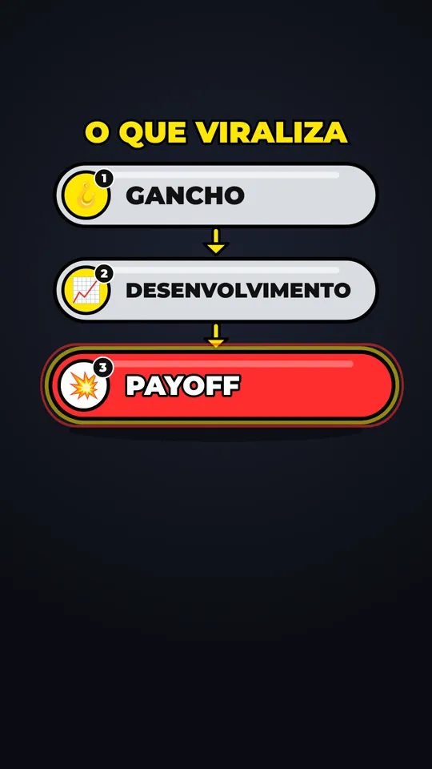
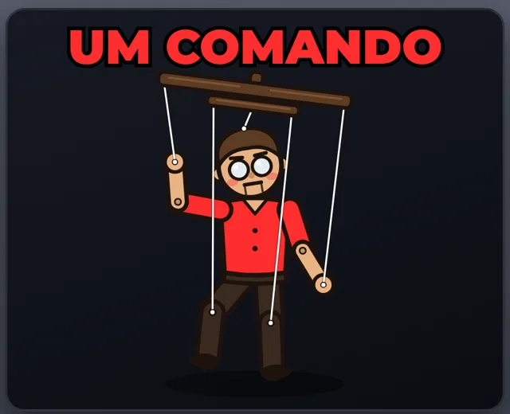
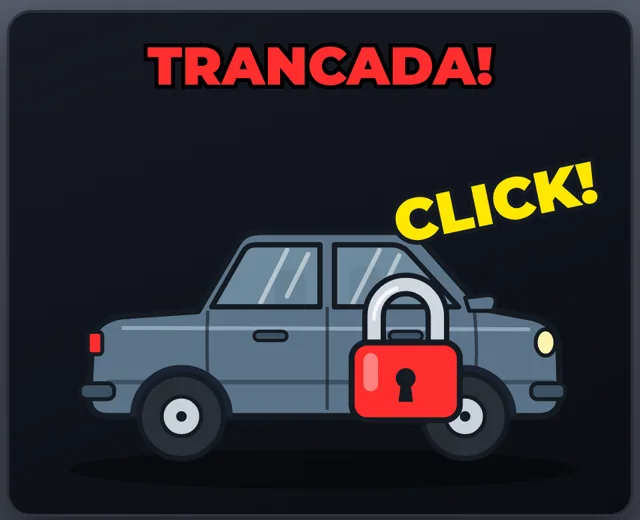
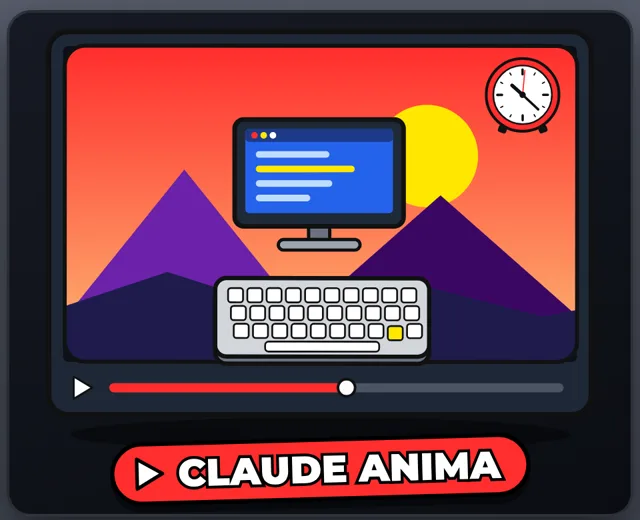
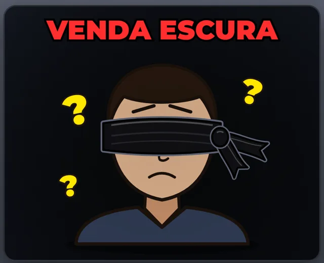
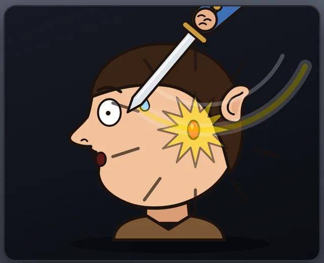

Do vídeo longo ao corte viral.
From long video to viral cut.
Cole o link de um podcast, live ou aula. O Claude AI Shorts Editor transcreve no seu computador, o Claude escolhe os melhores trechos e escreve o roteiro, e o Remotion entrega reels 9:16 com o rosto enquadrado, legenda palavra a palavra e motion graphics.
Paste a link to a podcast, livestream or lecture. Claude AI Shorts Editor transcribes it on your computer, Claude picks the best moments and writes the script, and Remotion renders 9:16 reels with the face framed, word-by-word captions and motion graphics.
$ ./ae auto "https://youtu.be/…"Exemplo ilustrativo, animado no navegador com as mesmas regras do reel de verdade: títulos e cards nunca ficam sobre o rosto, a legenda acende a palavra falada e o fim escurece suave.
Illustrative example, animated in the browser with the same rules as a real reel: titles and cards never sit on the face, the caption lights up the spoken word and the ending fades out gently.
Um comando. Seis reels e o porquê de cada um.
One command. Six reels, and why each one.
Você não recebe só os vídeos. Recebe o roteiro que o Claude escreveu, com o gancho, o payoff e a nota de cada corte, e as folhas que ele usou para revisar o próprio trabalho.
You don't just get videos. You get the script Claude wrote, with each cut's hook, payoff and score, plus the contact sheets it used to review its own work.
Por padrão saem 6 cortes de 35 a 60 segundos. Dá para pedir mais, menos, só um trecho do vídeo ou uma prévia rápida em meia resolução.
By default you get 6 cuts of 35 to 60 seconds. You can ask for more, fewer, just one part of the video, or a quick half-resolution preview.
Você não escolhe nada.
You don't pick anything.
O trabalho mecânico é de scripts. O que precisa de critério (o que corta, onde começa, o que aparece na tela) é do Claude, e ele deixa escrito por quê.
Mechanical work is done by scripts. Anything that needs judgment (what to cut, where it starts, what shows on screen) is Claude's, and it writes down why.
| # | Etapa | Step | Quem faz | Who |
|---|---|---|---|---|
| 1 | Baixar o vídeo (ou usar o arquivo)Download the video (or use the file) | yt-dlp | ||
| 2 | Transcrever, palavra por palavraTranscribe, word by word | Whisper · GPU | ||
| 3 | Escolher os trechos e escrever o roteiro: cortes, título, legenda, correções, ênfases, motions, cenas novasPick the moments and write the script: cuts, title, captions, fixes, emphasis, motions, new scenes | Claude | ||
| 4 | Validar o roteiroValidate the script | script + Claude | ||
| 5 | Cortar, enquadrar o rosto, legendar, animar e renderizarCut, frame the face, caption, animate and render | video-use + Remotion | ||
| 6 | Olhar as folhas de revisão e corrigir o roteiroLook at the review sheets and fix the script | Claude | ||
| — | Escolher o vídeo e rodar o comandoChoose the video and run the command | vocêyou |

Sete motions, no tempo da palavra.
Seven motions, timed to the word.
O Claude ancora cada efeito numa palavra da fala. O layout mede onde está a cabeça e encaixa o texto no espaço livre. Toque num quadro para repetir.
Claude anchors each effect to a spoken word. The layout measures where the head is and fits the text into the free space. Tap a tile to replay it.
title
Manchete do gancho nos 3 primeiros segundos.
The hook's headline in the first 3 seconds.
keyword
Uma ideia em 1–2 palavras, sem repetir a legenda.
One idea in 1–2 words, never repeating the caption.
counter
Todo número que importa vira contador.
Every number that matters becomes a counter.
zoom
Punchline e frase de efeito, rosto centrado.
Punchlines and one-liners, face centred.
shake
Susto e indignação. No máximo dois por corte.
Shock and outrage. Two per cut, tops.
flash
Virada de assunto, antes de uma revelação.
A turn in the story, right before a reveal.
scene
Ilustração em card ou tela cheia, o áudio continua.
An illustration as a card or full screen; audio keeps going.
Quando falta ilustração, o Claude desenha.
When there's no illustration, Claude draws one.
Cenas são componentes React desenhados em SVG, no código, para o assunto do vídeo. Ficam no projeto e são reaproveitadas nos próximos. Estes quadros saíram de reels reais.
Scenes are React components drawn in SVG, in code, for the topic of the video. They stay in the project and get reused next time. These frames come from real reels.





// remotion/src/scenes/ Marionete.tsx Carteira.tsx Comparacao.tsx Venda.tsx Grafico.tsx … +12
Não gostou? Peça em português.
Don't like it? Just say so.
O Claude relê o roteiro, muda o que você pediu e só o que mudou é renderizado de novo. Mexer só em legenda ou motion nem recorta o vídeo.
Claude rereads the script, changes what you asked for, and only what changed is rendered again. Touching only captions or motions doesn't even re-cut the video.
$ ./ae revisar --pedido "o c02 começa devagar"$ ./ae revisar --pedido "c02 starts too slow"O gancho passou para a frase mais forte e os 11 s de introdução saíram. Exemplo ilustrativo.
The hook moved to the strongest line and the 11 s intro is gone. Illustrative example.
Roda no seu computador.
Runs on your machine.
O vídeo fica no seu computador: a transcrição e o render são locais. Para o Claude vão só o texto da transcrição e as folhas de revisão.
The video stays on your computer: transcription and rendering are local. Only the transcript text and the review sheets go to Claude.
- sistema
- system
- Windows 10/11 (pelo WSL), macOS 13+ ou Linux
- Windows 10/11 (via WSL), macOS 13+ or Linux
- GPU
- NVIDIA recomendada: a transcrição fica muitas vezes mais rápida. Sem ela (e no Mac) roda no processador, mais devagar
- NVIDIA recommended: transcription gets many times faster. Without one (and on a Mac) it runs on the CPU, slower
- Claude
- Claude Pro, Max, Team ou Enterprise, ou uma chave de API. O plano gratuito não inclui o Claude Code
- Claude Pro, Max, Team or Enterprise, or an API key. The free plan doesn't include Claude Code
- ferramentas
- tools
- git · ffmpeg · Python 3.10+ · Node 18+. O
instalar.shcuida do resto - git · ffmpeg · Python 3.10+ · Node 18+.
instalar.shhandles the rest - disco
- disk
- Uns 20 GB livres
- About 20 GB free
- saída
- output
- MP4 1080×1920, 30 fps, com legenda gravada
- MP4 1080×1920, 30 fps, captions burned in
Escolha o vídeo. O resto é com o Claude.
Pick the video. Claude does the rest.
Três comandos para quem já usa terminal, e um passo a passo para Windows, Mac e Linux para quem nunca abriu um.
Three commands if you already use a terminal, and a walkthrough for Windows, Mac and Linux if you've never opened one.